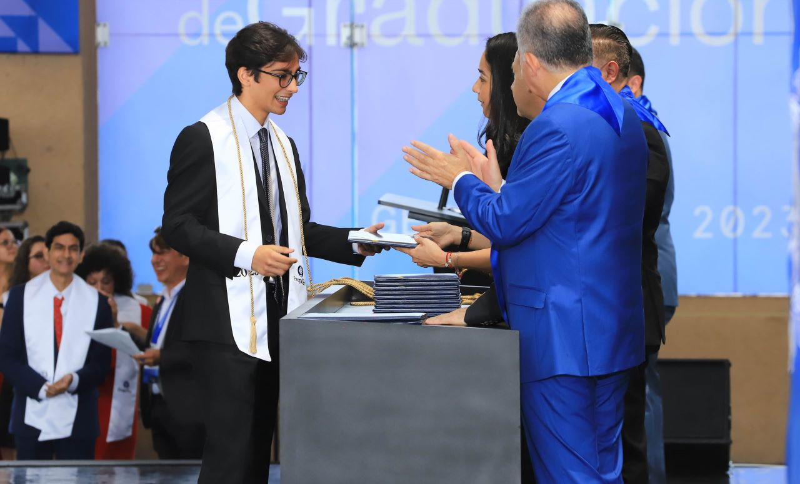
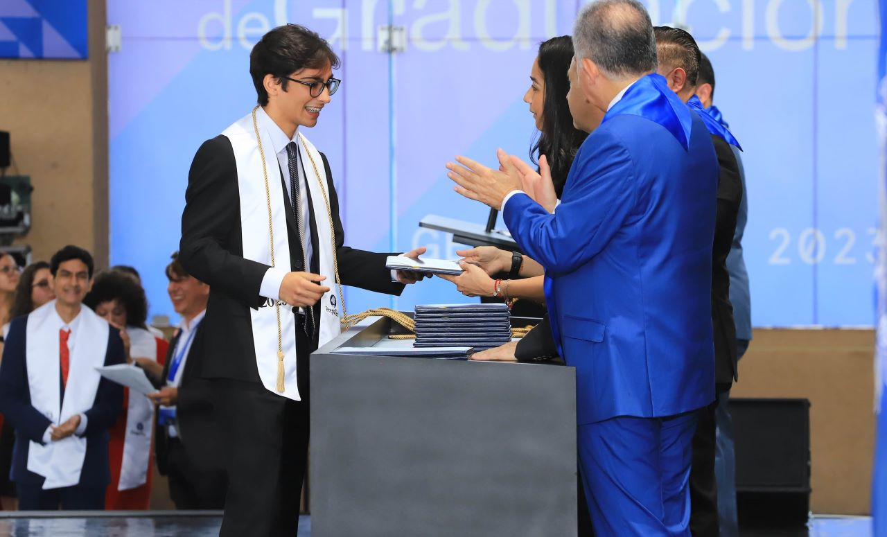

Education
My academic journey and professional training
B.S. in Computer Technologies Engineering
Tecnológico de Monterrey
Currently pursuing a Bachelor of Science in Computer Technologies Engineering with academic excellence scholarship.
High School
Tecnológico de Monterrey
Excellence recognition with a cumulative GPA of 9.6 / 10. High school completed at Tecnológico de Monterrey with academic excellence scholarship.
 

Scholarship Service Project
Tecnológico de Monterrey
I created and developed a proposal focused on note-taking within Tecnológico de Monterrey institutions to help students perform better in different areas. I conducted a series of surveys with 50 people over 4 months to observe the results and apply different note-taking methods, such as the Cornell method, diagrams, abbreviations, etc. It was observed that the implementation of these methods helped students in more advanced semesters study fewer hours per week.
Middle School
La Salle de Seglares
Cumulative GPA of 9.7 / 10 throughout the three years of middle school.
Elementary School
La Salle de Seglares
Cumulative GPA of 9.3 / 10 throughout the six years of elementary school.